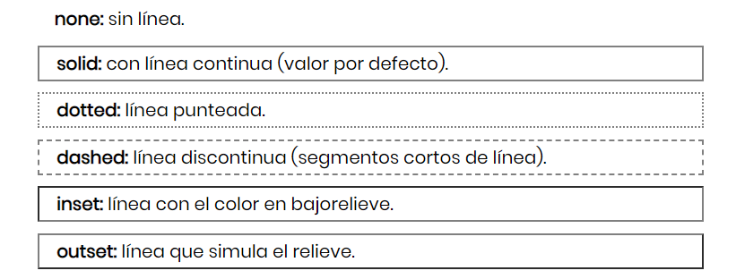
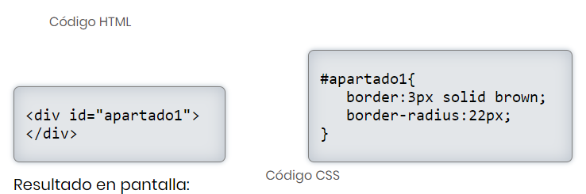
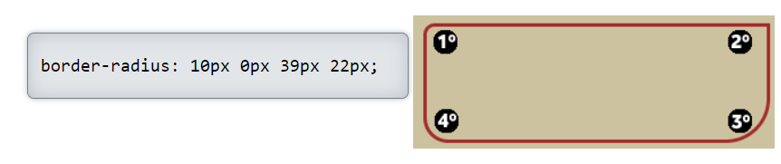

Líneas separadoras horizontales
Existen dos formas para crear una línea separadora horizontal y una única forma para crear una línea separadora vertical.
Para crear una línea horizontal la forma fácil y rápida es utilizar la etiqueta < hr>, que no se cierra y que crea una línea horizontal simple.
< hr>:
Esta etiqueta admite algunas características CSS como el grosor de la línea (border-width), la anchura (width), el color (border-color) o el tipo de línea (border-style).
Para representar la línea azul punteada que hay sobre este párrafo es necesario tanto la etiqueta html como las declaraciones CSS: < hr> En este ejemplo el selector CSS (hr{) hace referencia a todas las líneas (< hr>) de la página. En el caso de querer hacer referencia únicamente a una, la etiqueta < hr> tendría que tener un id para poder identificarla (< hr id="linea1">) y el selector CSS sería: #linea1 hr{
Esta etiqueta admite algunas características CSS como el grosor de la línea (border-width), la anchura (width), el color (border-color) o el tipo de línea (border-style).
Para representar la línea azul punteada que hay sobre este párrafo es necesario tanto la etiqueta html como las declaraciones CSS: < hr> En este ejemplo el selector CSS (hr{) hace referencia a todas las líneas (< hr>) de la página. En el caso de querer hacer referencia únicamente a una, la etiqueta < hr> tendría que tener un id para poder identificarla (< hr id="linea1">) y el selector CSS sería: #linea1 hr{
Líneas separadoras horizontales verticales
Para crear líneas verticales tenemos que definir uno de los 4 bordes que tiene una caja (< div>), utilizando una (o varias) de estas
propiedades: Si se quiere añadir una única línea habría que añadir sólo una de estas líneas.
Ejemplo para hacerlo:
border-top: 1px solid red;
border-bottom: 2px dotted green;
border-right: 1px dashed #3C5391;
border-left: 1px inset orange;
Ejemplo para hacerlo:
border-bottom: 2px dotted green;
border-right: 1px dashed #3C5391;
border-left: 1px inset orange;
Bordes Simples
Para poder indicar un borde determinado con un color y un grosor concreto para un < div>, dentro del código CSS, utilizamos la propiedad 'border', que utiliza el siguiente formato:
border:( 2px solid grey; )
En este ejemplo, el valor '2px establece el grosor del borde en 2 píxeles, el valor 'solid' especifica el tipo de borde, mientras que finalmente se indica el color, ya sea utilizando el de color, o bien el código de color en hexadecimal (anteponiendo el símbolo #).
En lo referente a los tipos de bordes existen las siguientes posibilidades:
border:( 2px solid grey; )
En este ejemplo, el valor '2px establece el grosor del borde en 2 píxeles, el valor 'solid' especifica el tipo de borde, mientras que finalmente se indica el color, ya sea utilizando el de color, o bien el código de color en hexadecimal (anteponiendo el símbolo #).
En lo referente a los tipos de bordes existen las siguientes posibilidades:

Bordes Redondeados
Con la propiedad border-radius tenemos la posibilidad de crear < div> con las esquinas con bordes redondeados, pudiendo especificar la suavidad de las esquinas de manera conjunta o cada una de las esquinas por separado.
Para poder visualizar una esquina con borde redondeado, además de la propiedad border-radius, tenemos que definir un borde normal (con border) y/o indicar un color de fondo (con background-color).
Con estas dos líneas de código CSS practicamente no podemos apreciar ninguna esquina redondeada, ya que como el div no tiene contenido y no hemos definido la altura del < div id="apartado1"> el navegador establece una altura de 0 píxeles.
Para solucionarlo, vamos a añadir las dimensiones que tendrá este < div> para poder apreciar los bordes redondeados:
Con 'width' y 'height' definimos el tamaño del < div> que tiene como id el nombre "apartado1". En este ejemplo se ha definido una anchura de 300 píxeles por 100 px de alto (el tamaño se podría especificar también en porcentaje, sustituyendo 'px' por '%').
Utilizando 'border' indicamos un borde de un grosor de 3 píxeles, con una línea contínua sólida de color marrón [brown] (el color también podría especificarse en código hexadecimal).
Por último, con 'border-radius' especificamos que la suavidad de las 4 esquinas sea de 22 píxeles (el valor 0 correspondería a una esquina totalmente recta).
Si queremos indicar diferentes valores para cada una de las esquinas, tendríamos que especificar los 4 valores en el siguiente orden:
1º: esquina superior/izquierda
2º: superior/derecha
3º: inferior/derecha
4º: inferior/izquierda.

Con estas dos líneas de código CSS practicamente no podemos apreciar ninguna esquina redondeada, ya que como el div no tiene contenido y no hemos definido la altura del < div id="apartado1"> el navegador establece una altura de 0 píxeles.
Para solucionarlo, vamos a añadir las dimensiones que tendrá este < div> para poder apreciar los bordes redondeados:
Con 'width' y 'height' definimos el tamaño del < div> que tiene como id el nombre "apartado1". En este ejemplo se ha definido una anchura de 300 píxeles por 100 px de alto (el tamaño se podría especificar también en porcentaje, sustituyendo 'px' por '%').
Utilizando 'border' indicamos un borde de un grosor de 3 píxeles, con una línea contínua sólida de color marrón [brown] (el color también podría especificarse en código hexadecimal).
Por último, con 'border-radius' especificamos que la suavidad de las 4 esquinas sea de 22 píxeles (el valor 0 correspondería a una esquina totalmente recta).
Si queremos indicar diferentes valores para cada una de las esquinas, tendríamos que especificar los 4 valores en el siguiente orden:
1º: esquina superior/izquierda
2º: superior/derecha
3º: inferior/derecha
4º: inferior/izquierda.
